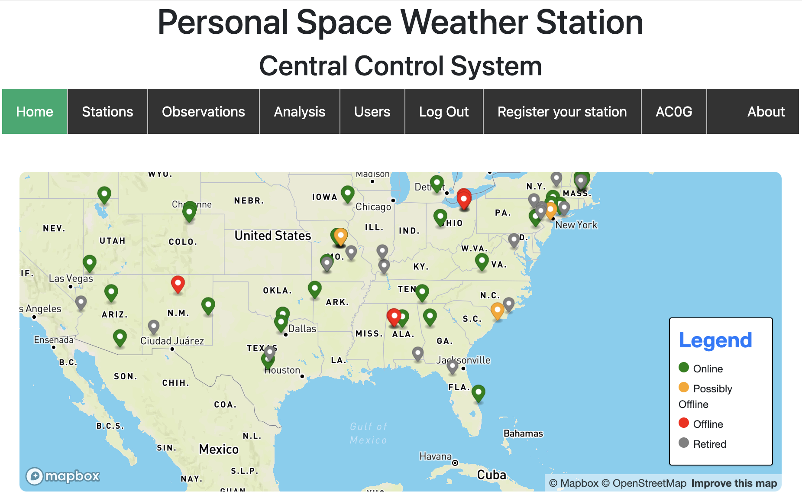
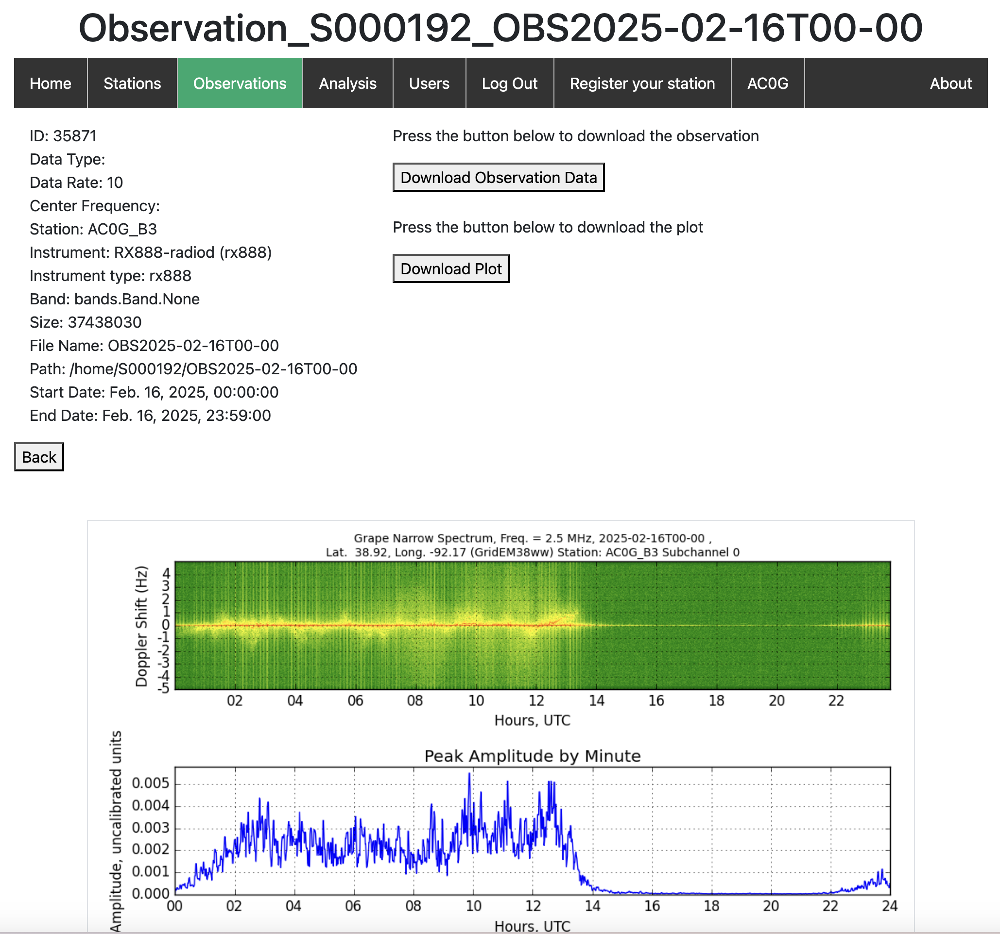

HamSCI WWV/H and CHU Monitoring
WD software captures data in support of the HamSCI Personal Space Weather Station project. It makes simultaneous I/Q stream recordings of WWV, WWVH, and CHU broadcasts, converts these into digital_rf data repositories and uploads them to the PSWS server at the University of Alabama.

